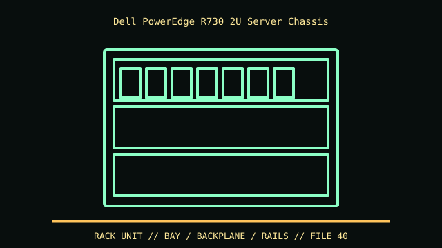

[ IDENTIFIED ENCLOSURE // POWEREDGE R730 (13G 2U, STANDARD CHASSIS) ]
Dell PowerEdge R730 2U Server Chassis
87.3 × 444 × 684 mm (H × W × D); rail, bezel and cable arm extend depth. Front board/backplane configurations must match R730, not xd.

VARIANT / ARCHIVAL CAVEAT: R730 is distinct from R730xd (deeper multi-backplane layout). Match service tag, PERC, cage, riser and backplane identifiers; preserve each drive carrier by bay.
Mechanical specifications and fit
| Catalog identity | PowerEdge R730 (13G 2U, standard chassis) |
|---|---|
| Dimensions and clearances | 87.3 × 444 × 684 mm (H × W × D); rail, bezel and cable arm extend depth. Front board/backplane configurations must match R730, not xd. |
| Drive bays / mounts | Up to 16 × 2.5-inch or 8 × 3.5-inch hot-plug drives; controller and backplane define SAS/SATA support. |
| Board, system and compatibility | Dell system board, hot-swap fan array, risers and redundant PSU. 2U height does not guarantee full-height card clearance without appropriate riser. |
| Revision / identification | R730 is distinct from R730xd (deeper multi-backplane layout). Match service tag, PERC, cage, riser and backplane identifiers; preserve each drive carrier by bay. |
Preservation and installation notes
R730 is distinct from R730xd (deeper multi-backplane layout). Match service tag, PERC, cage, riser and backplane identifiers; preserve each drive carrier by bay.
Dell system board, hot-swap fan array, risers and redundant PSU. 2U height does not guarantee full-height card clearance without appropriate riser.
- Capture the complete model/SKU, serial/date label, board assembly and bay/backplane/riser identifiers before disassembly; keep matched screws, trays, carriers, feet and cables with the case.
- Check the cited manual's specific build option before transferring hardware. Published maximum GPU, drive, fan or radiator capacity may not be simultaneous when a removable cage or alternative riser occupies that volume.
- For rack and vintage systems, preserve the exact rails, shields, doors, brackets and model-specific safety instructions; do not infer compatibility from a familiar brand or physical connector shape.
Manufacturer manuals and archival sources
- Dell PowerEdge R730 Owner’s ManualPrimary manufacturer or model-specific technical/manual reference used for the identification and mechanical data above.
- Dell PowerEdge R730/R730xd Technical Guide archival copySecond product manual, manufacturer resource or established technical archive; choose the exact regional SKU and revision.
When exact dimensions depend on configuration, the text says so; verify the measured specimen before making a fit or restoration decision.